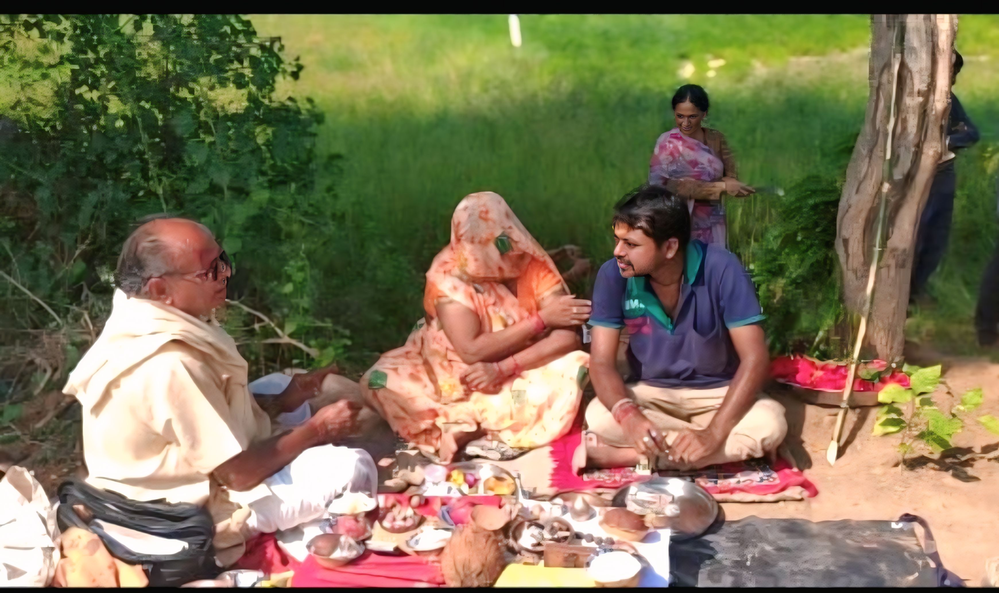
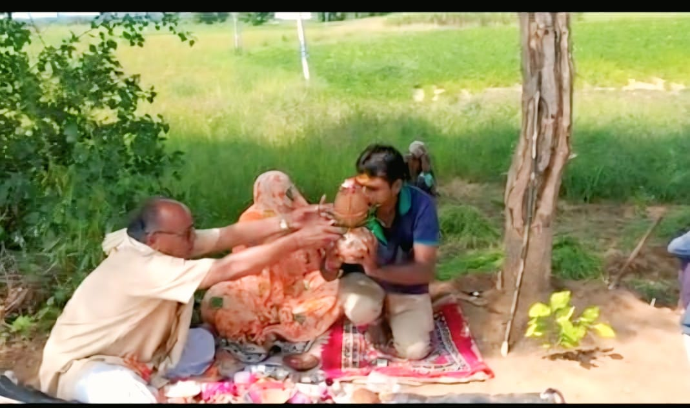

🙏 महादेव मंदिर की अद्भुत कहानी
पहले गाँव के स्टेशन पर एक बिल्ववृक्ष था। गाँव के लोगों ने खेत के मालिक से अनुमति लेकर वहाँ एक ओटला (बैठने की व्यवस्था) बनाने का निर्णय लिया। शुभ मुहूर्त देखकर पूजा भी हुई और सब कुछ ठीक चल रहा था।
 लेकिन जब मजदूर और कारीगर वहाँ काम करने पहुंचे, तो खेत मालिक ने अचानक मना कर दिया। सभी लोग निराश होकर लौट आए। लेकिन यह महादेव की इच्छा थी कि वहाँ निर्माण न हो!
फिर गाँव की एक विधवा महिला नंदाबेनने अपने खेत की थोड़ी ज़मीन दान करने का संकल्प लिया ताकि वहाँ महादेव का मंदिर बनाया जा सके। गाँव के प्रतिष्ठित व्यक्ति राजेन्द्रसिंह और राकेशसिंह तथा पूरे गाँवने पूरा समर्थन दिया, और यह तय हुआ कि मंदिर पत्थर से बनेगा, ताकि यह सदियों तक अडिग खड़ा रहे।अब मंदिर का निर्माण लगभग पूरा हो चुका है, और गाँव के लोग 23, 24, 25, 2025 को महाप्राण प्रतिष्ठा की तैयारी कर रहे हैं। 🚩
महाप्राण प्रतिष्ठा: 23/24/25/04 - 2025 🚩